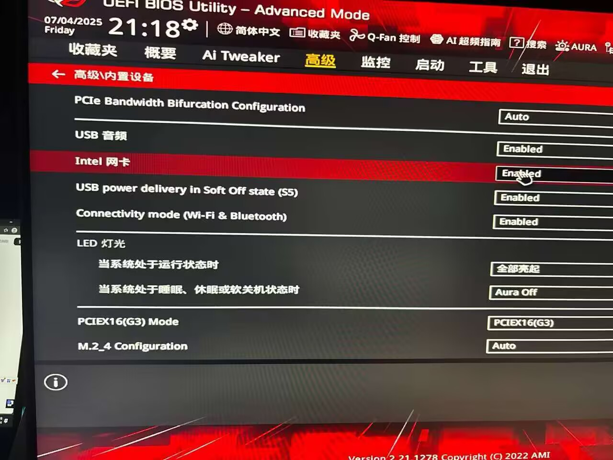
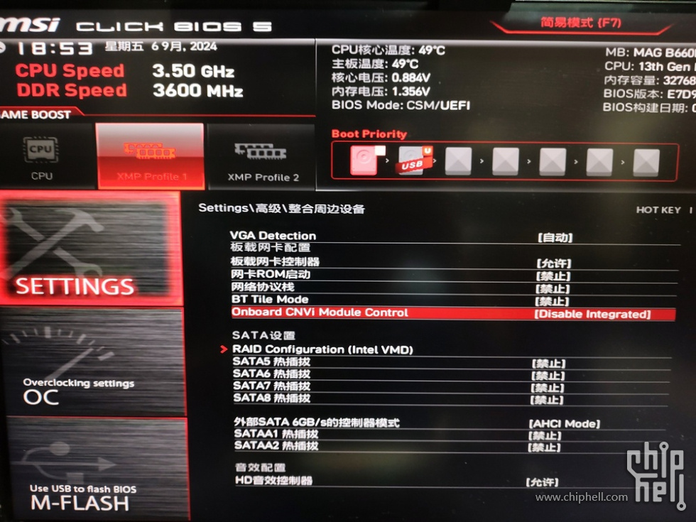
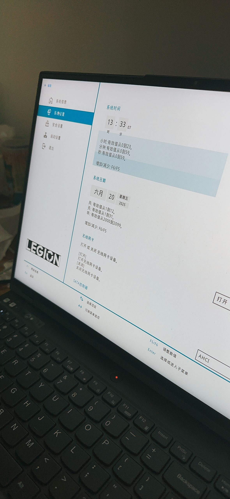

开机时连续按下 Del 键进入 BIOS 设置界面。
切换到 Advanced 选项卡，找到 Onboard Devices Configuration。
在网络设置中找到 Wireless LAN 选项，将其设置为 Disabled。
按 F10 键，选择 Yes 保存设置并退出 BIOS。
开机时连续按下 Del 或 F2 键进入 BIOS 设置界面。
在 Advanced 菜单下找到 Network Stack Configuration。
在网络设置中找到 Wireless LAN Controller 选项，将其设置为 Disabled。
按 F10 键，选择 Yes 保存设置并退出 BIOS。
开机时连续按下 F1 或 Fn + F1 键进入 BIOS 设置界面。
在 Config 菜单下找到 Network 选项。
在网络设置中找到 Wireless LAN 选项，将其设置为 Disabled。
按 F10 键，选择 Yes 保存设置并退出 BIOS。